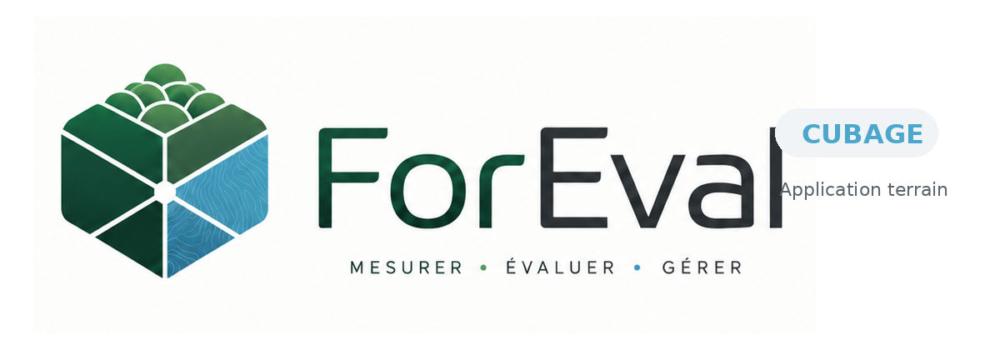

Sessions sauvegardées
Chaque chantier est sauvegardé automatiquement. Vous pouvez commencer une autre propriété puis revenir ici pour reprendre une saisie.
Sécurité des données
Les sessions sont enregistrées sur cet appareil à chaque saisie. Une copie de secours de la session est gardée au plus toutes les 5 minutes, et avant chaque suppression ou mise à jour. L’export JSON reste la seule sauvegarde hors de l’appareil : faites-le en fin de journée.
Copies de secours
Paramétrages du chantier
Ces informations seront reprises dans les exports.
🌳 Tarifs feuillus par essence
Choisissez le tarif de cubage actif pour chaque essence feuillue. Les tables Adrian I, Adrian II, Adrian IV et Chaudé 8 à 12 sont intégrées dans la bibliothèque des tarifs.
🌲 Tarifs Schaeffer rapides — résineux
Pour chaque essence résineuse, choisissez soit Schaeffer rapide, soit un tarif Adrian / Chaudé. En Schaeffer, seul le diamètre est nécessaire ; en Adrian / Chaudé, la hauteur bois d’œuvre devient obligatoire.
Parcelle forestière
Essence
État / qualité optionnelle
Sélection : sain
Commentaire arbre
Diamètre à 1,30 m — cm
Hauteur bois d'œuvre — m
Chêne supérieur
Hauteur qualité supérieure — m
Prévisualisation
Derniers arbres modifiables
Liste des arbres saisis
Tous les arbres apparaissent dans l’ordre réel de saisie. Vous pouvez filtrer, modifier un arbre, le supprimer, le dupliquer ou compléter son commentaire.
Carte des arbres géoréférencés
Affichage des arbres GPS avec couleur par essence et numéro visible. La carte est un outil de contrôle ; QGIS reste l’outil d’analyse avancée.
Avant de partir, cadrez la propriété puis enregistrez la zone. Fonds enregistrables : IGN (conditions d’usage ouvertes).
Hors réseau, la carte affiche les zones enregistrées ci-dessus et celles déjà consultées. Les arbres, la position GPS et la trace s’affichent toujours, même sur fond vide.
Synthèse par essence
Résumé terrain par parcelle
Analyse peuplement simple
Tarifs feuillus complémentaires préparés
Ces tarifs sont préparés dans l'architecture, mais restent désactivés tant que les tables ou formules ne sont pas validées.
Feuilles Excel prévues
Les exports sont scindés entre feuillus et résineux. Chaque groupe parcelle + essence + qualité est affecté à une feuille "Saisie ligne…".
Exports SIG
Exports des arbres géoréférencés. Les points sont liés au numéro d’arbre ; le KML applique une couleur par essence et affiche le numéro.
Historique des exports

📘 ForEval Cubage 1.2.01 en 30 secondes
Créez une session, saisissez les arbres, contrôlez la liste, la carte et la synthèse, puis exportez vers Excel ou SIG en fin de parcelle.